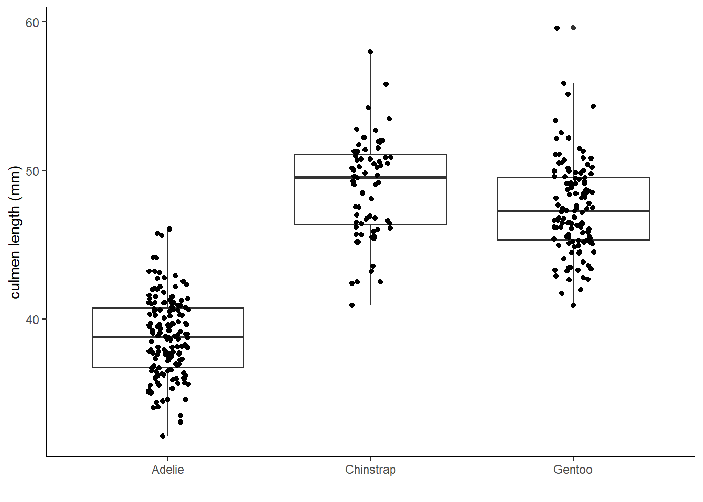

C Lab 3: Visualizing data in R (Part 1)
In this lab, we will get into one of the really fun parts of R programming – making figures!
By the end of this lab, you should be able to:
- load an R package using the
library()function, - install R packages as needed using
install.packages(), - use the
ggplot2package within thetidyverseto write simple code to plot data, - create boxplots, histograms, and scatterplots to compare the distributions of different subgroups of data.
C.0.1 Resources
This lab is loosely based on chapter 1 in the online textbook “R for Data Science” (second edition), which you can find online here: https://r4ds.hadley.nz/data-visualize
C.2 Part 1: Packages in R (covered in lecture, so only here for reference)
Many functions and data in R are not instantly available. Instead, they are available online as “packages”. Packages extend the usefulness of R with new functions and data (and documentation/metadata), and they are hosted online in a standard way for easy installation and loading.
C.2.1 Installing an R package
Installing an R package is easy to do within RStudio. In the computer labs we have already installed most R packages that you will need for any coding in WFC 98. However, when you are programming on your personal computer you will need to install any packages that need to be loaded for a particular lab or HW. You only need to install an R package once.
The code chunk below is only necessary if you are working on this lab at home, because these packages are already installed in the computer lab.
# the line below is commented so it won't run.
# if you need to install the packages, delete the hashtag then run
# the line below, but then turn it into a comment again
# before knitting
# install.packages(c("tidyverse", "palmerpenguins"))Delete or comment out any install.packages() commands before you knit. You cannot knit an Rmd that still has active install.packages() code.
C.2.2 Loading an R package
On the other hand, you must have code to load any relevant R packages inside of your Rmd if you go on to use functions/data from those packages in your Rmd.
Loading an R package tells R/RStudio that you plan to use that package during your current sessions. You need to load an R package in every session that you use it. After it is loaded, it will stay loaded until you close R/RStudio.
If you run this code and get the error message that there is no package called ‘tidyverse’, that means that the package is not installed, and you’ll need to use the earlier code to install it.
Assuming everything worked, in your output you’ll notice a somewhat odd message.
It says “Attaching core tidyverse packages” and then lists several cryptic
names. Unlike most packages, tidyverse is a suite of multiple R packages, but
you can load them all in one line to save time, because they are commonly used
together.
Today we are primarily using functions from the ggplot2 package, which was
loaded when we used the library(tidyverse) command in the code chunk above.
C.2.3 Part 1b (5 minutes, instructor leading)
We also need to load the package with the penguin data.
There is one odd thing about data sets that are included in R packages. You will notice that nothing new has shown up in the global environment. However, the data frames are actually loaded (but hidden).
## # A tibble: 344 × 8
## species island bill_length_mm bill_depth_mm flipper_length_mm body_mass_g sex year
## <fct> <fct> <dbl> <dbl> <int> <int> <fct> <int>
## 1 Adelie Torgersen 39.1 18.7 181 3750 male 2007
## 2 Adelie Torgersen 39.5 17.4 186 3800 female 2007
## 3 Adelie Torgersen 40.3 18 195 3250 female 2007
## 4 Adelie Torgersen NA NA NA NA <NA> 2007
## 5 Adelie Torgersen 36.7 19.3 193 3450 female 2007
## 6 Adelie Torgersen 39.3 20.6 190 3650 male 2007
## 7 Adelie Torgersen 38.9 17.8 181 3625 female 2007
## 8 Adelie Torgersen 39.2 19.6 195 4675 male 2007
## 9 Adelie Torgersen 34.1 18.1 193 3475 <NA> 2007
## 10 Adelie Torgersen 42 20.2 190 4250 <NA> 2007
## # ℹ 334 more rows## # A tibble: 344 × 17
## studyName `Sample Number` Species Region Island Stage `Individual ID` `Clutch Completion`
## <chr> <dbl> <chr> <chr> <chr> <chr> <chr> <chr>
## 1 PAL0708 1 Adelie… Anvers Torge… Adul… N1A1 Yes
## 2 PAL0708 2 Adelie… Anvers Torge… Adul… N1A2 Yes
## 3 PAL0708 3 Adelie… Anvers Torge… Adul… N2A1 Yes
## 4 PAL0708 4 Adelie… Anvers Torge… Adul… N2A2 Yes
## 5 PAL0708 5 Adelie… Anvers Torge… Adul… N3A1 Yes
## 6 PAL0708 6 Adelie… Anvers Torge… Adul… N3A2 Yes
## 7 PAL0708 7 Adelie… Anvers Torge… Adul… N4A1 No
## 8 PAL0708 8 Adelie… Anvers Torge… Adul… N4A2 No
## 9 PAL0708 9 Adelie… Anvers Torge… Adul… N5A1 Yes
## 10 PAL0708 10 Adelie… Anvers Torge… Adul… N5A2 Yes
## # ℹ 334 more rows
## # ℹ 9 more variables: `Date Egg` <date>, `Culmen Length (mm)` <dbl>,
## # `Culmen Depth (mm)` <dbl>, `Flipper Length (mm)` <dbl>, `Body Mass (g)` <dbl>,
## # Sex <chr>, `Delta 15 N (o/oo)` <dbl>, `Delta 13 C (o/oo)` <dbl>, Comments <chr>I prefer to formally load the data into my environment, which you can do with
the data() function.
# the palmerpenguins package called their data "penguins"
# and the command will load both data frames
data(penguins)Now we can see the data frames in our environment. Let’s take a closer look.
# the glimpse() function lets you see the variable (columns) and
# a few observations for each variable (rows)
glimpse(penguins)## Rows: 344
## Columns: 8
## $ species <fct> Adelie, Adelie, Adelie, Adelie, Adelie, Adelie, Adelie, Adelie, …
## $ island <fct> Torgersen, Torgersen, Torgersen, Torgersen, Torgersen, Torgersen…
## $ bill_length_mm <dbl> 39.1, 39.5, 40.3, NA, 36.7, 39.3, 38.9, 39.2, 34.1, 42.0, 37.8, …
## $ bill_depth_mm <dbl> 18.7, 17.4, 18.0, NA, 19.3, 20.6, 17.8, 19.6, 18.1, 20.2, 17.1, …
## $ flipper_length_mm <int> 181, 186, 195, NA, 193, 190, 181, 195, 193, 190, 186, 180, 182, …
## $ body_mass_g <int> 3750, 3800, 3250, NA, 3450, 3650, 3625, 4675, 3475, 4250, 3300, …
## $ sex <fct> male, female, female, NA, female, male, female, male, NA, NA, NA…
## $ year <int> 2007, 2007, 2007, 2007, 2007, 2007, 2007, 2007, 2007, 2007, 2007…## Rows: 344
## Columns: 17
## $ studyName <chr> "PAL0708", "PAL0708", "PAL0708", "PAL0708", "PAL0708", "PAL0…
## $ `Sample Number` <dbl> 1, 2, 3, 4, 5, 6, 7, 8, 9, 10, 11, 12, 13, 14, 15, 16, 17, 1…
## $ Species <chr> "Adelie Penguin (Pygoscelis adeliae)", "Adelie Penguin (Pygo…
## $ Region <chr> "Anvers", "Anvers", "Anvers", "Anvers", "Anvers", "Anvers", …
## $ Island <chr> "Torgersen", "Torgersen", "Torgersen", "Torgersen", "Torgers…
## $ Stage <chr> "Adult, 1 Egg Stage", "Adult, 1 Egg Stage", "Adult, 1 Egg St…
## $ `Individual ID` <chr> "N1A1", "N1A2", "N2A1", "N2A2", "N3A1", "N3A2", "N4A1", "N4A…
## $ `Clutch Completion` <chr> "Yes", "Yes", "Yes", "Yes", "Yes", "Yes", "No", "No", "Yes",…
## $ `Date Egg` <date> 2007-11-11, 2007-11-11, 2007-11-16, 2007-11-16, 2007-11-16,…
## $ `Culmen Length (mm)` <dbl> 39.1, 39.5, 40.3, NA, 36.7, 39.3, 38.9, 39.2, 34.1, 42.0, 37…
## $ `Culmen Depth (mm)` <dbl> 18.7, 17.4, 18.0, NA, 19.3, 20.6, 17.8, 19.6, 18.1, 20.2, 17…
## $ `Flipper Length (mm)` <dbl> 181, 186, 195, NA, 193, 190, 181, 195, 193, 190, 186, 180, 1…
## $ `Body Mass (g)` <dbl> 3750, 3800, 3250, NA, 3450, 3650, 3625, 4675, 3475, 4250, 33…
## $ Sex <chr> "MALE", "FEMALE", "FEMALE", NA, "FEMALE", "MALE", "FEMALE", …
## $ `Delta 15 N (o/oo)` <dbl> NA, 8.94956, 8.36821, NA, 8.76651, 8.66496, 9.18718, 9.46060…
## $ `Delta 13 C (o/oo)` <dbl> NA, -24.69454, -25.33302, NA, -25.32426, -25.29805, -25.2179…
## $ Comments <chr> "Not enough blood for isotopes.", NA, NA, "Adult not sampled…A few questions to orient ourselves to these data.
Which data frame has more variables, or are they the same?
Which data frame has more observations, or are they the same?
What is different about the column/variable names in
penguinsas compared topenguins_raw?
C.3 Part 2: Using ggplot() for plotting in R (15 minutes, self-led)
The core function in the ggplot2 package is called ggplot(). But making
plots using ggplot() is like making lasagna. You have to add layers until
you’ve produced the perfect result.
Recall from lecture that we need the base canvas with the data (and aesthetics),
as well as at least one additional geometry layer. We will see lots of types
of geom in this course. We’ll briefly begin with a critical type of plot,
the scatterplot. That shows two-dimensional points to illustrate the
relationship between the x- and y-axis. It has a geometry called geom_point().
## Warning: Removed 2 rows containing missing values or values outside the scale range
## (`geom_point()`).
Hooray, we have made our first ggplot! However, today we want to practice making histograms and boxplots. So we’ll need some slightly different aesthetics and geometries. We only started with scatterplots because they are so common, and they have a very clearly defined x- and y-axis.
Before we move on, there is one crucial thing to note: each time you add a
new layer (e.g. a geom, some labels for nicer x- and y-axis titles, etc.) you
need to have a plus symbol, +, at the end of the previous line of code.
Otherwise R does not know to keep looking for additional layers before making
the plot.
Let’s try out a histogram. First, we might simply want to visualize the distribution of all of our measurements of bill length.
## `stat_bin()` using `bins = 30`. Pick better value with `binwidth`.## Warning: Removed 2 rows containing non-finite outside the scale range (`stat_bin()`).
Because histograms just count values for one variable, there is only
one aesthetic (x=bill_length_mm). The geometry was for a histogram is
geom_histogram(). There are a few things we might want to consider.
- This has a lot of separate bins. We might say it is a very fine-grained
histogram. We can adjust that with arguments inside of
geom_histogram(). - This is summarizing data from multiple species at once. That is not very meaningful. We can separate these out in several different ways.
To address the first issue, you may have noticed that geometries are also functions, so their output can be modified using arguments just like most other functions in R. By default this function creates 30 bins (thirty separate x-values/bars) for a histogram. Let’s specify a smaller number.
## Warning: Removed 2 rows containing non-finite outside the scale range (`stat_bin()`).
Alternatively, we could specify a binwidth, setting how wide each bin should
be. Let’s try using a binwidth of 2 (the units for this column are millimeters.)
## Warning: Removed 2 rows containing non-finite outside the scale range (`stat_bin()`).
Now for the fun part. We can quickly add informative complexity. Let’s keep
track of all three species in our histogram. We can add the fill aesthetic
fill and the very similar color aesthetics allow you to color code different
data points based on another variable/column in your data. Let’s try color
first and see why it is NOT ideal here.
ggplot(data = penguins,
mapping = aes(x = bill_length_mm, color = species)) +
geom_histogram(binwidth = 2)## Warning: Removed 2 rows containing non-finite outside the scale range (`stat_bin()`).
Hmmm, this is not right. We want the whole bars colored. For some geometries,
color only changes the borders, not the full shapes. But color will often be
useful, for example to change the color of points when using geom_point(). To
fill in a whole shape with color, you use fill instead.
ggplot(data = penguins,
mapping = aes(x = bill_length_mm, fill = species)) +
geom_histogram(binwidth = 2)## Warning: Removed 2 rows containing non-finite outside the scale range (`stat_bin()`).
This is still not quite right. It is showing all the data, now color-coded, but
it is stacking the numbers rather than showing three separate histograms with
some overlap in the x-values. That is because geom_histogram() defaults to
stacking data, even if there is a fill aesthetic. You can fix that by changing
another argument called position.
ggplot(data = penguins,
mapping = aes(x = bill_length_mm, fill = species)) +
geom_histogram(binwidth = 2, position = "identity", alpha = 0.7)## Warning: Removed 2 rows containing non-finite outside the scale range (`stat_bin()`).
We made two changes. We made it so each species has a separate
histogram starting from a count of 0. And we made the bars partially transparent
with the alpha argument. (0 is totally transparent, 1 is totally solid
colors.) It’s a little wonky, but we can pretty much read each histogram now.
Instead, let’s switch to box-and-whisker plots. These use a different geometry,
geom_boxplot, and they will have a continuous variable for one axis, and
usually also a discrete variable (e.g., species) for the other axis. Let’s
stick with bill length and species and make three vertical boxplots, one for
each species.
## Warning: Removed 2 rows containing non-finite outside the scale range (`stat_boxplot()`).
This is easier to look at. We can see quite clearly that Adelie Penguins have the lowest bill length, while the Chinstrap and Gentoo Penguin samples have subtantial overlap in bill length.
C.4 Part 3: Exploring (15 minutes, self-led)
Use the code chunks below to try out some plotting with a new variable.
- Create a histogram like the fancy, partially transparent one we made above,
but for the variable
bill_depth_mminstead of bill length, still using thefillaesthetic with thespeciescolumn. Hint: copy and paste that code into the chunk below, then switch the variable name(s) as needed.
- Now create a boxplot with
speciesas the x-axis andbill_depth_mmas the y-axis.
- Compare with your results for bill length. Bill depth refers to the thickness (top to bottom) of a bill, while bill length is the distance from the base of the bill to the tip. Which species seems to have an overall short, thick bill? Which species seems to have an overall long, skinny bill? Double-check by googling the species to see some photos.
Remove this and add your text notes here.
- Try to fix these snippets of broken code. You will note that we have added an option to these code chunks that says “eval = FALSE”. That is how we say that RStudio should not try to actually run (evaluate) that code when knitting the Rmd file into HTML. Because the code is broken, it you tried to knit when “eval = TRUE” (i.e. when RStudio will try to run that code), then it will return and error and your code won’t knit. Feel free to remove that option or switch it to “eval = TRUE” after you have fixed the code for each chunk. Note: if you are ever trying to knit a HW and your code is returning errors, you can always set those chunks to “eval = FALSE” if you want to still be able to submit your knit file.
Chunk 1 – this plot won’t run.
# uncomment the code below and try to fix it
#ggplot(data = penguins,
# x = species,
# y = body_mass_g) +
# geom_boxplot()Chunk 2 – a blank plot won’t do.

## geom_violin: draw_quantiles = NULL, na.rm = FALSE, orientation = NA
## stat_ydensity: trim = TRUE, scale = area, na.rm = FALSE, orientation = NA, bounds = c(-Inf, Inf)
## position_dodge- (Time permitting.) The code below creates a scatterplot with bill length and bill depth, while also color coding the points. Review the code, then try to do the same thing for a boxplot of bill length, color-coding each box for the species it represents.
ggplot(data = penguins,
mapping = aes(x = bill_length_mm,
y = bill_depth_mm,
color = species)) +
geom_point()## Warning: Removed 2 rows containing missing values or values outside the scale range
## (`geom_point()`).
C.5 Wrapping up (5 minutes)
Knit your file to HTML, and save the original Rmd, then add them to your WFC 98 folder on Google Drive.
C.6 Extra material
- Start on HW 2.
- Look over the intro chapter on data visualization in the R for Data Science
textbook https://r4ds.hadley.nz/data-visualize. Here are a few things to
try out.
- Add a
geom_smooth()layer on top ofgeom_point()for one of the scatterplots we made. What does it do? - Check out
geom_density()instead ofgeom_histogram()in one of our histogram-making code chunks above. What does it do? Try adding the argumentadjust = 1/2oradjust = 2and see how it changes the shape. (You will need to remove thebinorbinwidthoptions, because those are only relevant forgeom_histogram()). - Try out the exercises in section 2.4.3.
- Add a
- Try to make the same scatterplot we made in our very first plot, but using
penguins_rawinstead of penguins. Can R handle column names that have spaces in them? (Hint: using the left quote symbol, `, on either side of the name will allow R to understand that you are trying to refer to a column name.) - Check out this code and plot below. It is a prettier version of our boxplot for
culmen length. Google some of the additional layers I added to see how to
create and modify them yourself.
You may want to explore themes, explained more on this website. Rob often finds
himself using
theme_bw()andtheme_classic().
ggplot(data = penguins,
mapping = aes(x = species, y = bill_length_mm)) +
geom_boxplot() +
geom_jitter(width = .1) +
theme_classic() +
labs(x = "", y = "culmen length (mm)")## Warning: Removed 2 rows containing non-finite outside the scale range (`stat_boxplot()`).## Warning: Removed 2 rows containing missing values or values outside the scale range
## (`geom_point()`).